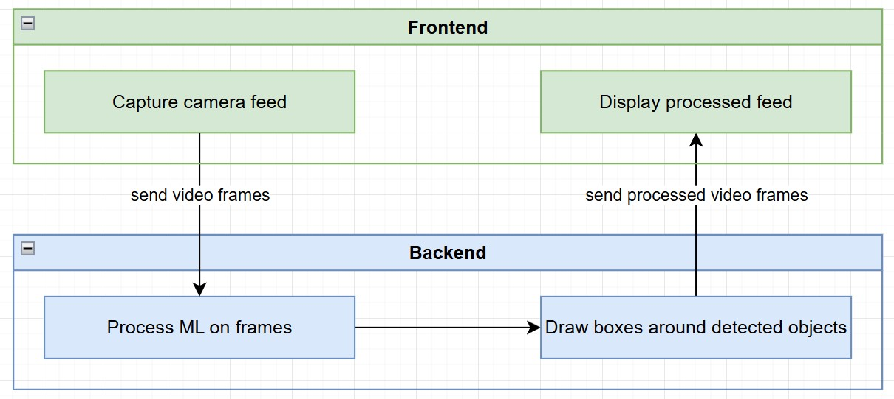

Project 3: Real-time object detection with YOLOv8
Introduction
Background
Object Detection is a computer vision task where a model identifies and localizes multiple objects within an image or video. This involves not only classifying objects but also predicting their positions through bounding boxes. A popular approach to object detection is the YOLO (You Only Look Once) family of models, known for their speed and accuracy.
YOLOv8 is the latest iteration in this series, designed to enhance performance, simplify use, and expand versatility. YOLOv8 uses a single-stage architecture, meaning it predicts bounding boxes and class probabilities in one pass through the network, making it faster than many alternatives.
Scope
This project demonstrates a real-time object detection application using Python. The system leverages the YOLO object detection model and a simple tkinter user interface to allow users to start and stop a live webcam feed with object detection enabled.
Note: This project will be a rather small project introducing how easily object detection can be used with pre-trained models.
Deliverables (High-Level Scope)
- A simple frontend built with tkinter that allows the user to start and stop the live video feed and also enable and disable object detection.
- A backend that uses YOLO object detection objects in real-time.
Out of Scope
- Training the machine learning algorithm. A pre-built model will be used.
- Any adjustment options of the tool by the user.
- Any other additional feature that is not described in the deliverables above.
High-Level Design
